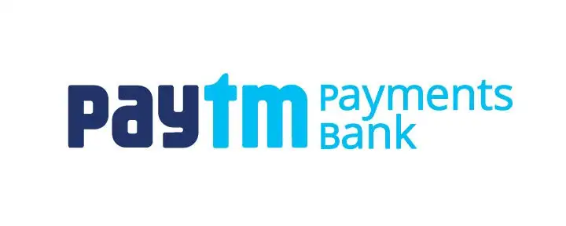
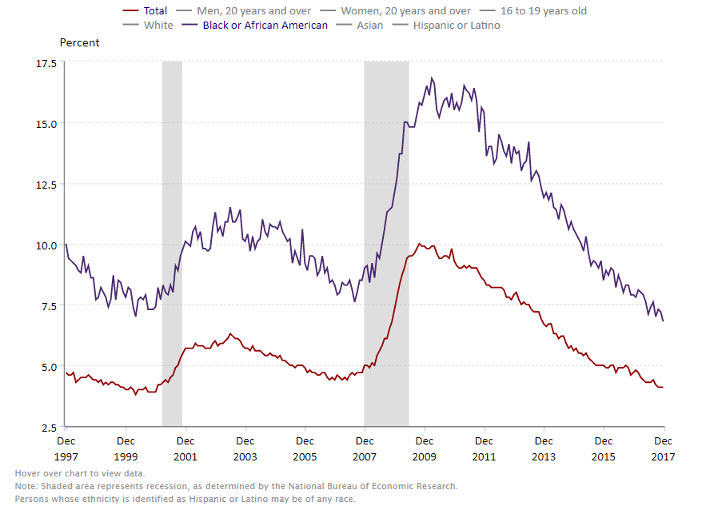

Instagram SQL Clone
Skills - SQL,Problem SolvingCloned the popular social media website Instagram's database and wrote queries to extract meaningful data

I’m Jayant Bangia, a Data Science graduate and GIS/Data Analytics professional specializing in geospatial analysis, business intelligence, automation, and AI-driven solutions. I currently work as a GIS Specialist at Wood, where I support subsea and energy projects using ArcGIS, Power BI, SQL, Python, Power Automate, and SharePoint to convert complex data into actionable insights.Linkedin and GitHub
.png) Skills - ArcGIS Pro, ArcGIS Enterprise, Python, Power BI, Power Automate, SQL
Skills - ArcGIS Pro, ArcGIS Enterprise, Python, Power BI, Power Automate, SQL

Skills - Python, SQL, Linux, Dataflow, Excel, Power BICloned the popular social media website Instagram's database and wrote queries to extract meaningful data

Employing a variety of Statistical methodologies to examine employment rates across different racial identities such as Asian, Black, White, and Hispanic, as well as gender identities such as male and female by analysing trends from 2003 to 2024.Established and implemented predictive models to estimate future unemployment rates for various demographic groups.Applied a Linear Regression model to predict which race had the highest probability of getting a job.

I selected a dataset comprising 3181 days of Tesla stock information and performed a detailed analysis. Using Pandas commands, I examined model information and extracted closing time data from various timestamps in the stock dataset. To visualize the stock trend, I employed Matplotlib and Plotly. Building a linear regression model involved preprocessing steps like MinMaxScaler and StandardScaler from the sklearn library. The result was a closely matched R2 score and Mean Squared Error (MSE) between the actual and predicted data, with a margin of only 2%. This project showcased my proficiency in data analysis, visualization, and machine learning techniques.
I worked on a breast cancer dataset sourced from Kaggle, which included information on 4000 patients. Utilizing the factor_analyzer library, I conducted factor analysis to understand the relationships within the data. The analysis revealed a significant correlation of 0.68 between age and regional node size. To ensure data integrity, I executed data cleaning procedures, removing outliers with the pandas library. Additionally, I performed adequacy tests like KMO and Bartlett’s test to assess the dataset's fitness for analysis. The results were visualized using a heatmap created with the seaborn library.
The World Population Data Analysis project involves comprehensive exploration and examination of global population trends using a DataFrame. The initial step involves sorting the data by the "2022 Population" column in descending order and presenting the top 10 countries. Subsequently, the data is grouped by continent, and the mean population values are calculated for each continent, with results sorted by the 2022 population in descending order. To focus specifically on Oceania, rows containing the 'Oceania' substring in the "Continent" column are filtered. The project further delves into visual representation.

I randomly took a customer's Excel sheet and performed data cleaning using various pandas commands such as drop, strip, replace, etc. This was done to ensure that the dataset is well-prepared and suitable for subsequent data analysis. The cleaning process involved eliminating unnecessary information, removing extra spaces, and replacing incorrect values, among other operations, to enhance the overall quality and integrity of the data.
I am actively engaged in a diverse array of activities, balancing my passion for artificial intelligence with a keen interest in sports and music. As an enthusiast of AI, I stay updated on the latest advancements in the field, ensuring that my knowledge is current and relevant. In addition to my intellectual pursuits, I find joy in watching basketball matches and immersing myself in the rhythm of music. On the organizational front, I take on leadership roles, serving as the Secretary of the Graduate Consulting Club at Stevens Institute of Technology and spearheading women's leadership events at the same institution. Furthermore, my involvement in Model United Nations (MUN) and participation in climate change summits reflect my commitment to global issues. In my creative capacity, I contribute to event organization as a member of the creative team at Chitkara University. This diverse combination of interests and roles shapes my holistic approach to personal and professional growth.
A data-driven exploration of the iconic showdown between Tune Squad heroes and formidable Alien adversaries is underway! 🏀👽 By analyzing the Space Jam dataset using intricate statistical methods, hidden insights are being uncovered. ✨ The journey promises to be exhilarating, with findings to be shared with fellow enthusiasts at GDC 2024.
I had a great experience attending GDC 2024. It was fantastic meeting such a diverse group of people from across the globe who are solving real-world issues and learning from them about the use of data in industry-specific contexts and how AI is currently being used in the industry, as well as the laws being made to prevent copyright violations with the use of AI. https://lnkd.in/eAH-WhEP